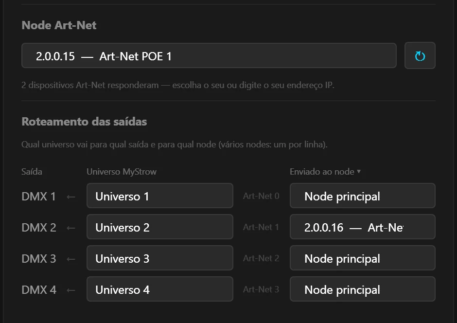

Um universo
por node
Sua instalação passa de 512 canais, ou seus refletores estão em dois pontos da sala? Conecte um node Art-Net por universo e diga ao MyStrow qual recebe o quê. Até quatro universos, sem mesa de luz.
Um universo = 512 canais = um cabo DMX
Um universo DMX transporta 512 canais. Uma moving head no modo 16 canais usa dezesseis, uma barra de LED pixel pode ocupar mais de cem: o limite chega rápido. A solução é adicionar um segundo universo, ou seja, uma segunda linha DMX com seus próprios 512 canais.
O MyStrow gerencia quatro universos. Com um node Art-Net de quatro saídas, cada saída já leva um universo. Mas muitos nodes compactos — como os Art-Net POE de um universo da Electroconcept — têm só uma. Nesse caso, usa-se um node por universo, todos na mesma rede, e o MyStrow envia para cada um o seu.
Disponível a partir do MyStrow 3.2.2. As versões anteriores enviavam os quatro universos para um único aparelho: o segundo node ficava mudo.
O que você precisa
- Um node Art-Net por universo — RJ45 ou POE.
- Um switch de rede entre o PC e os nodes. Para nodes POE, um switch POE os alimenta pelo cabo de rede.
- O utilitário do fabricante para ajustar o endereço IP e o universo de cada node (DMX TOOLS na Electroconcept).
- Um cabo de rede por node, mais um para o PC.
Quatro etapas
Dê a cada node seu próprio endereço IP
Nodes do mesmo modelo saem de fábrica com o mesmo endereço: dois na mesma rede se atrapalham. Com o utilitário do fabricante, configure-os por exemplo em 2.0.0.15, 2.0.0.16, 2.0.0.17… Faça um aparelho de cada vez, só ele conectado.
Ajuste o universo de cada node
O primeiro node no universo Art-Net 0, o segundo no universo 1, e assim por diante. É o número que o MyStrow mostra na coluna “Art-Net” da tabela. Alguns utilitários contam a partir de 1: se um node ficar mudo, é a primeira coisa a verificar.
Associe cada linha ao seu node
No MyStrow, abra Conexão ▸ Saída DMX, aba Saída Node, e clique em ↻ para encontrar os nodes. Escolha o primeiro como node principal. Na tabela “Roteamento das saídas”, coluna Enviado ao node, escolha o segundo node na linha DMX 2, o terceiro na linha DMX 3… e clique em Conectar.
Faça o patch dos refletores no universo certo
No patch, os refletores ligados ao primeiro node vão no Universo 1, os do segundo no Universo 2. Os endereços DMX recomeçam em 1 em cada universo.

Quatro nodes, quatro universos
| Linha | Universo MyStrow | Universo Art-Net | Node | Endereço IP |
|---|---|---|---|---|
| DMX 1 | Universo 1 | 0 | Node 1 | 2.0.0.15 |
| DMX 2 | Universo 2 | 1 | Node 2 | 2.0.0.16 |
| DMX 3 | Universo 3 | 2 | Node 3 | 2.0.0.17 |
| DMX 4 | Universo 4 | 3 | Node 4 | 2.0.0.18 |
Uma linha também pode enviar o mesmo universo que outra: é o modo espelho, prático para duplicar uma linha DMX do outro lado da sala sem splitter.
O que não funciona
| Material | Vários universos? | Por quê |
|---|---|---|
| Nodes Art-Net RJ45 ou POE | ✅ Até 4 | Cada um tem seu endereço na rede: o MyStrow envia a cada node o seu universo. |
| Node Art-Net de 2 ou 4 saídas | ✅ Até 4 | Um só aparelho basta: cada saída já leva um universo. |
| Interfaces USB-DMX (Open DMX, Enttec, MS-DMX…) | ❌ Só um | O MyStrow controla uma porta USB de cada vez. Ligar quatro interfaces não dá quatro universos. |
| Vários USB NODE da Electroconcept | ⚠️ Não recomendado | Cada aparelho cria sua própria placa de rede, todos com o mesmo endereço de fábrica: o PC não sabe mais com quem falar. |
Se um node ficar mudo
- O segundo node não acende: verifique se o universo dele corresponde ao número “Art-Net” da sua linha. Se o utilitário conta a partir de 1, tente o número seguinte.
- Só um node responde à busca: provavelmente os dois têm o mesmo endereço IP. Mude um, só com esse aparelho conectado.
- Os refletores do node 2 reagem aos ajustes do node 1: estão no universo errado. Abra o patch e passe-os para o Universo 2.
- Nenhum node responde: a placa de rede do PC precisa estar na rede 2.x.x.x. O guia de configuração do node explica esse ajuste.
Mais canais, sem mesa de luz
Baixe o MyStrow, ligue seus nodes num switch e distribua seus refletores em quatro universos.